Who do you usually work with?
Founders, studio heads, executive producers, and lead producers who feel a gap between plans and reality:
slipping milestones, strained publisher calls, or teams stuck in constant fire-fighting.
Do you work under NDA?
Yes. Most engagements are NDA-bound; I share only sanitised learnings, frameworks, and tools.
Time zones & availability?
Europe/Helsinki (EET). Remote-first, with overlapping US/EU hours when needed. I typically take on only a
small number of parallel engagements to stay hands-on.
Tech & platforms?
Unity, Unreal Engine, Godot, and GameMaker pipelines; Meta Quest; iOS/Android; Steam and console submissions;
analytics via BigQuery/Firebase.
How do we start?
Send a short brief about where you feel expectations and reality are out of sync. I’ll suggest a scoped
alignment sprint (often 2–3 weeks) with clear outcomes, timelines, and decision points, so you know exactly
what we’re tackling.
 
